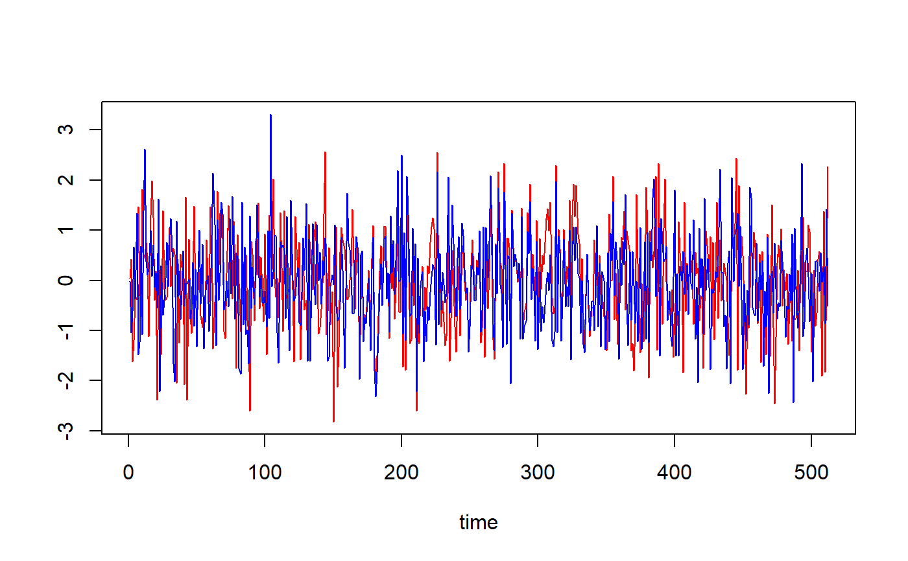
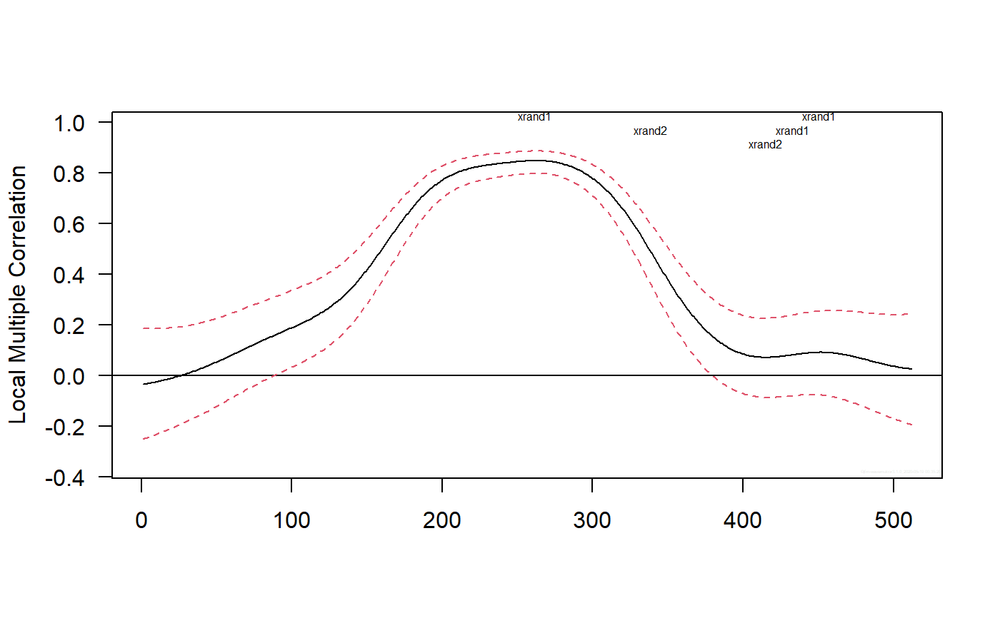
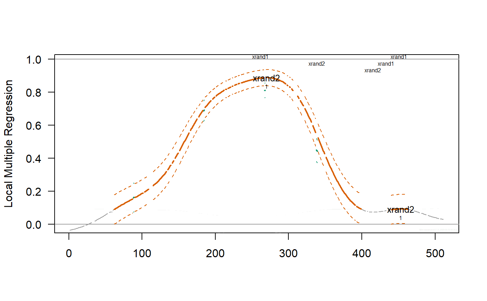

local.multiple.regression.RdProduces an estimate of local multiple regressions (as defined below) along with approximate confidence intervals.
local.multiple.regression(xx, M, window="gauss", p=.975, ymaxr=NULL)
| xx | A list of \(n\) time series, e.g. xx <- list(v1, v2, v3) |
|---|---|
| M | length of the weight function or rolling window. |
| window | type of weight function or rolling window. Six types are allowed, namely the uniform window, Cleveland or tricube window, Epanechnikov or parabolic window, Bartlett or triangular window, Wendland window and the gaussian window. The letter case and length of the argument are not relevant as long as at least the first four characters are entered. |
| p | one minus the two-sided p-value for the confidence interval, i.e. the cdf value. |
| ymaxr | index number of the variable whose correlation is calculated against a linear combination of the rest, otherwise at each wavelet level lmc chooses the one maximizing the multiple correlation. |
The routine calculates a set of time series of multiple regression coeffcients out of \(n\) variables.
List of four elements:
List of three elements:
List of seven elements:
numeric vector (rows = #observations) giving, at each value in time, the index number of the variable whose correlation is calculated against a linear combination of the rest. By default, lmr chooses at each value in time the variable maximizing the multiple correlation.
dataframe (rows = #observations, cols = #regressors) of original data.
Fernández-Macho, J., 2018. Time-localized wavelet multiple regression and correlation, Physica A: Statistical Mechanics, vol. 490, p. 1226--1238. <DOI:10.1016/j.physa.2017.11.050>
## Based on Figure 4 showing correlation structural breaks in Fernandez-Macho (2018). library(wavemulcor) options(warn = -1) xrand1 <- wavemulcor::xrand1 xrand2 <- wavemulcor::xrand2 N <- length(xrand1) b <- trunc(N/3) t1 <- 1:b t2 <- (b+1):(2*b) t3 <- (2*b+1):N wf <- "d4" M <- N/2^3 #sharper with N/2^4 window <- "gaussian" J <- trunc(log2(N))-3 # --------------------------- cor1 <- cor(xrand1[t1],xrand2[t1]) cor2 <- cor(xrand1[t2],xrand2[t2]) cor3 <- cor(xrand1[t3],xrand2[t3]) cortext <- paste0(round(100*cor1,0),"-",round(100*cor2,0),"-",round(100*cor3,0)) ts.plot(cbind(xrand1,xrand2),col=c("red","blue"),xlab="time")xx <- data.frame(xrand1,xrand2) # --------------------------- Lst <- local.multiple.regression(xx, M, window=window) #, ymax=1) # --------------------------- ##Producing correlation plot plot_local.multiple.correlation(Lst)#> NULL#> NULL